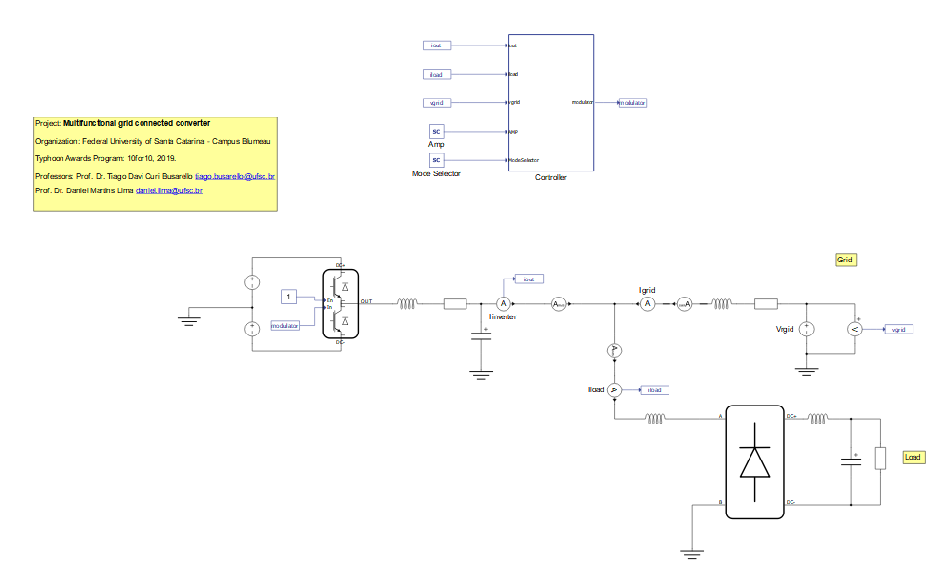
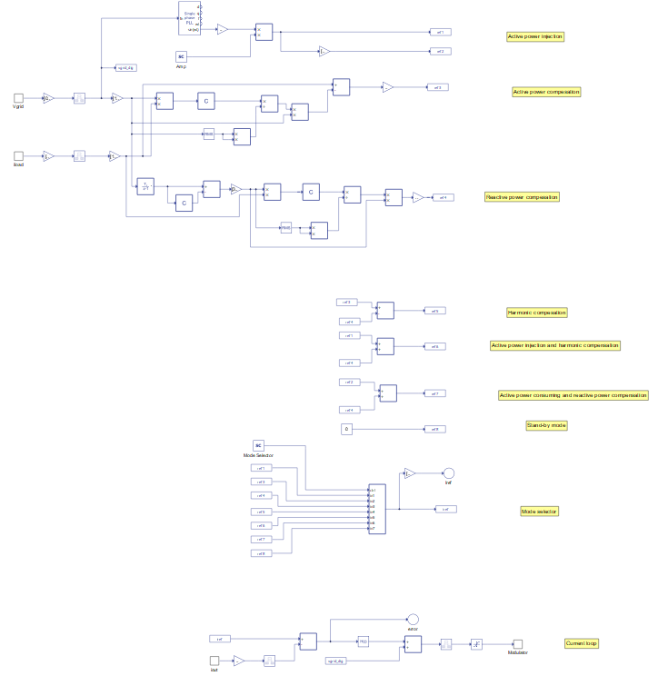
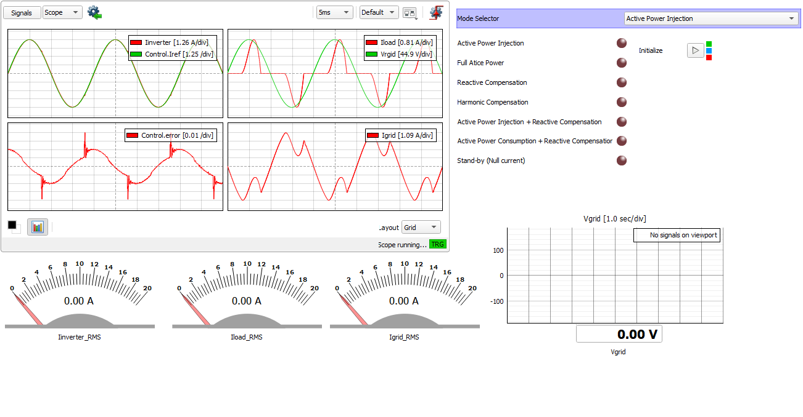
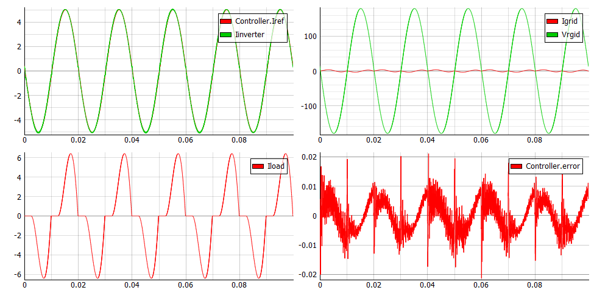
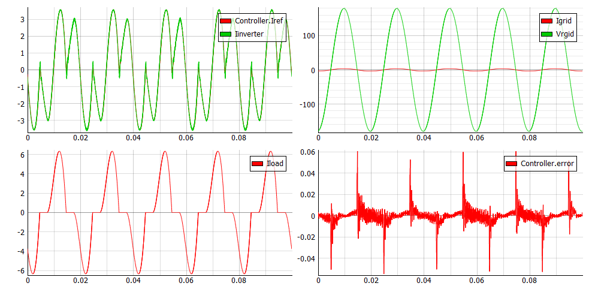
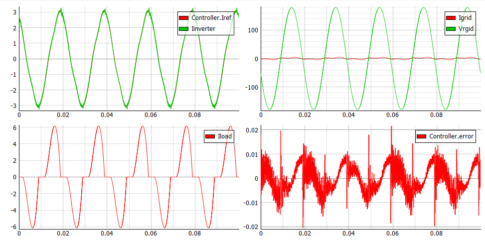
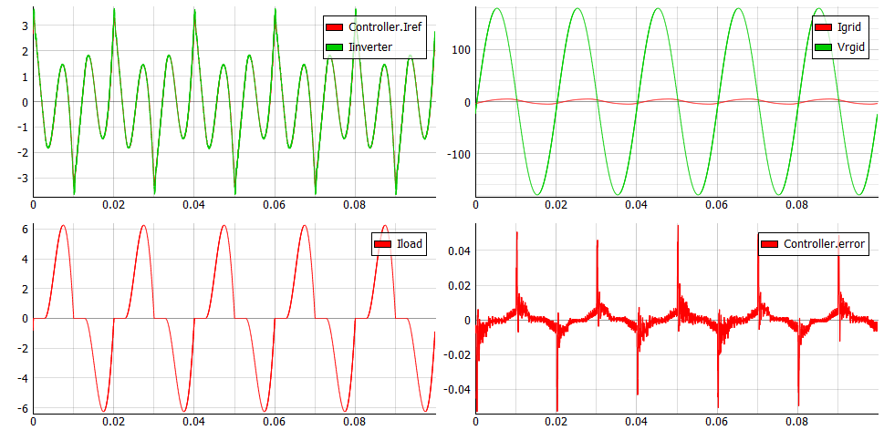
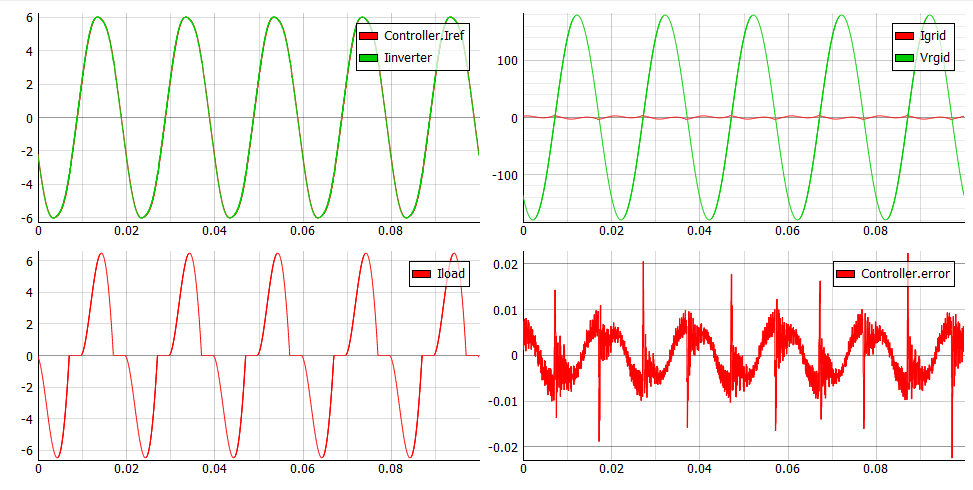
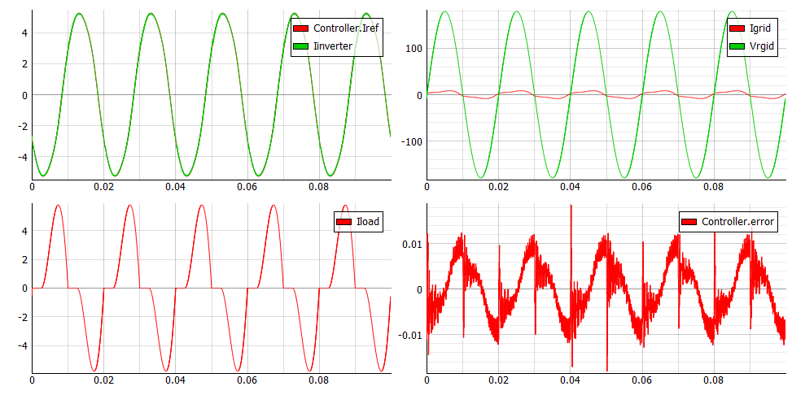
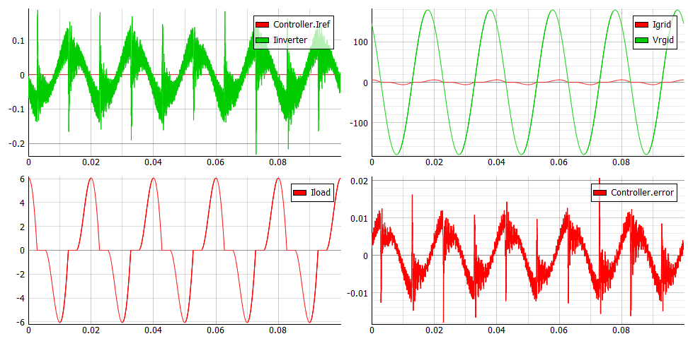

Multifunctional grid connected converter
Demonstration of a simple converter leg with advanced non-linear load compensation. Seven different operation modes are supported.
Introduction
In renewable energy and storage applications that require high power density, the use of a half-bridge converter is more preferable than a full bridge converter. Also, smart converters need to be equipped with multiple functionalities. Some advantages of this application are:
- The converter can be operated in seven different modes using only one simple topology
- All seven operating modes are embedded in one controller
This application demonstrates seven possible modes of operation with a control strategy based on conservative power theory. The Bidirectional Multifunctional Converter is able to operate in the following modes:
Model description
The electrical part of the model is shown in Figure 1. An Half Bridge was used. Switches and diodes are modeled as ideal switches. In this model, there are three measurements (Grid voltage – Vgrid, Load current- iload and inverter current- iout). The load is implemented using a Single Phase Diode Rectifier. Suggested parameters of the filter for this model are: R = 0.01 Ω, C = 0.25 mF, L = 4.8e-3 µH. The grid is modeled as single phase at 50 Hz. The inverter DC-side is a battery-based storage element.


The gains and signal transition components behind the iload and Vgrid signal input ports are used to emulate the sensor and an ADC of a DSP used in a real laboratory setup. The current controller is based on a PI control with feedforward compensation, which is sufficient to make the current follow the reference disregarding the operation mode. The core of the controller is represented by a single Discrete Transfer Function. You can decide which mode the Bidirectional Multifunctional Converter will operate in by the Mode Selector SCADA Input. In a real application, instead of manual selector the modes are handled by an additional decision-making algorithm or a superior hierarchical controller.
Each operation mode has its own current reference as follows. References ref_1 and ref_2 are references from the active power injection mode. In this mode, there are two options: when the energy is taken from VS1 and sent to the grid (ref_1) and when energy from the grid is stored in VS1 (ref_2). Both references are sinusoidal but opposite in phase. References ref_3, ref_4 and ref_5 are used for the power compensation. Reference ref_4 represents active power compensation, while ref_5 and ref_6 represents reactive power compensation and harmonic compensation. References ref_6 and ref_7 are combinations of some of the previous options. Reference ref_6 means that converter can simultaneously work in active power injection mode and harmonic compensation mode. Reference ref_7 means that converter can simultaneously work in active power consumption mode and reactive compensation mode. Reference ref_8 represents the stand-by mode; in this mode converter current is set to be null.
Simulation
This application comes with a pre-built SCADA panel (Figure 3). The panel offers most essential user interface elements (widgets) to monitor and interact with the simulation in runtime. You can customize it freely to fit your needs.

The following figures demonstrate how control works when the converter operates in each operation mode. In each case, the inverter current follows the referent current (top left), with a control error signal of approximately zero (bottom right). The waveform of the load current is also shown (bottom left). The sum of the inverter current and load current is grid current shown in the top right. The results presented are experimentally verified on a real laboratory setup at UFSC Campus Blumenau, Brazil.







Test automation
We don’t have a test automation for this example yet. Let us know if you wish to contribute and we will gladly have you signed on the application note!
Example requirements
Table 1 provides detailed information about the file locations and hardware requirements for running the model in real-time, followed by the HIL device resource utilization when running the model using this minimal hardware configuration. This information is provided to help you with running and customizing the model as you see fit.
| Files | |
|---|---|
| Typhoon HIL files | examples\models\grid-connected converters\multifunct grid-connected converter multifunct grid-connected converter.tse multifunct grid-connected converter.cus |
| Minimum hardware requirements | |
| No. of HIL devices | 1 |
| HIL device model | HIL402 |
| Device configuration | 1 |
| HIL device resource utilization | |
| No. of processing cores | 1 |
| Max. matrix memory utilization | 8.69% |
| Max. time slot utilization | 45.33% |
| Simulation step, electrical | 1 µs |
| Execution rate, signal processing | 100 µs |
Authors
[1] Jovana Markovic